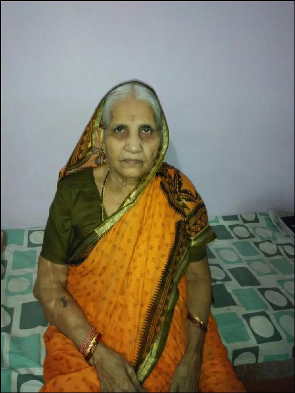

<div id="pf68" class="pf w0 h0" data-page-no="68"><div class="pc pc68 w0 h0"><div class="t m0 x4 h2 y96 ff1 fs0 fc0 sc0 ls0 ws0"> </div><div class="t m0 x4 h2 y97 ff1 fs0 fc0 sc0 ls0 ws0"> </div><div class="t m0 x4 h2 y98 ff1 fs0 fc0 sc0 ls0 ws0"> </div><div class="t m0 x20 h2 y99 ff1 fs0 fc0 sc0 ls14 ws0">96<span class="ls0"> </span></div><div class="t m0 x5 h2 y9a ff1 fs0 fc0 sc0 ls0 ws0"> </div><div class="t m0 x4 h8 ybc ff2 fs4 fc0 sc0 ls5 ws0">Chaityabhumi. Lakhs and l<span class="_ _1"></span>akhs of<span class="ls0"> </span>people gathered fro<span class="_ _1"></span>m all over the </div><div class="t m0 x4 h8 ybd ff2 fs4 fc0 sc0 ls7 ws0">country to pay their last homage to our Father, recalls <span class="_ _1"></span>aaji.<span class="ls0"> </span></div><div class="t m0 x4 h8 y17a ff2 fs4 fc0 sc0 ls0 ws0"> </div><div class="t m0 x7d h8 y359 ff2 fs4 fc0 sc0 ls0 ws0"> </div><div class="t m0 x4b h8 y2c2 ff2 fs4 fc0 sc0 ls0 ws0">                                                 <span class="ff6 ls8">Pradnya Mangala’s A<span class="_ _1"></span>aji<span class="ff3 ls0"> </span></span></div></div><div class="pi" data-data='{"ctm":[1.500000,0.000000,0.000000,1.500000,0.000000,0.000000]}'></div></div>
